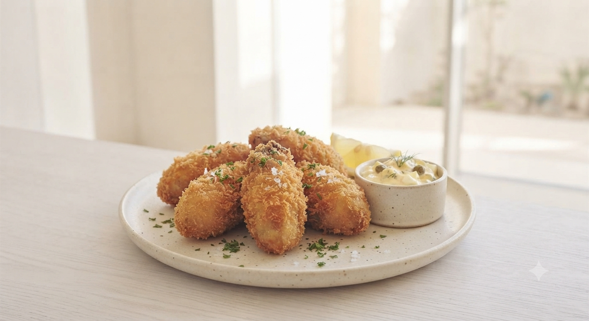
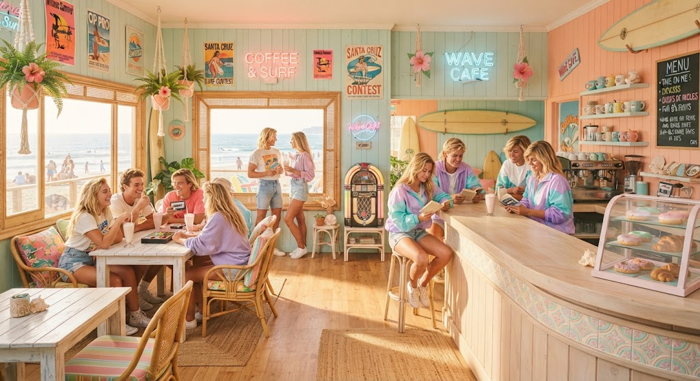
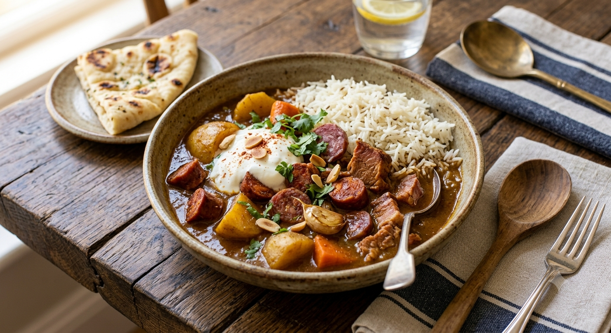

心地よさへのこだわり
New Saint Tropez Owner
清潔な空間
綺麗なトイレと清潔な店内をお約束します。
和洋の融合
郷土食と洋食のコラボなどユニークな体験を。
多目的な空間
女子会や特別な日をプロデュースします。

New Saint Tropez

「ここが山形であることを
一瞬、忘れてしまう。」
ドアを開ければ、そこは西海岸を彷彿とさせるビーチハウス。 お洒落な家具とBGM、そして心地よい接客があなたを包みます。 日常の喧騒を忘れ、特別な「憩いの時間」をお楽しみください。

地元の新鮮な野菜をたっぷりと使い、スパイスの芳醇な香りと素材の旨みが溶け込んだ自慢の一皿。
New Saint Tropez Owner
綺麗なトイレと清潔な店内をお約束します。
郷土食と洋食のコラボなどユニークな体験を。
女子会や特別な日をプロデュースします。
広々とした店内空間と開放的なリゾート感を生かして、食だけでなく「体験」と「集い」をお届けする新しい取り組みを企画しています。
心地よい音楽に包まれながらお酒やカフェを楽しむ贅沢な夜。地元アーティストによるアコースティックギターやジャズ演奏、ミニコンサートの企画を進行中です。
結婚式の二次会、企業パーティー、展示会や個展、撮影スタジオ利用など。広いスペースだからこそ実現できる特別なプライベートプランをご提案します。
ニューサントロペでは、地域のみなさまと一緒にワクワクする空間を作っていきたいと考えています。イベント開催やスペース利用についてもお気軽にご相談ください。
公式Instagramでご要望・最新情報をチェック